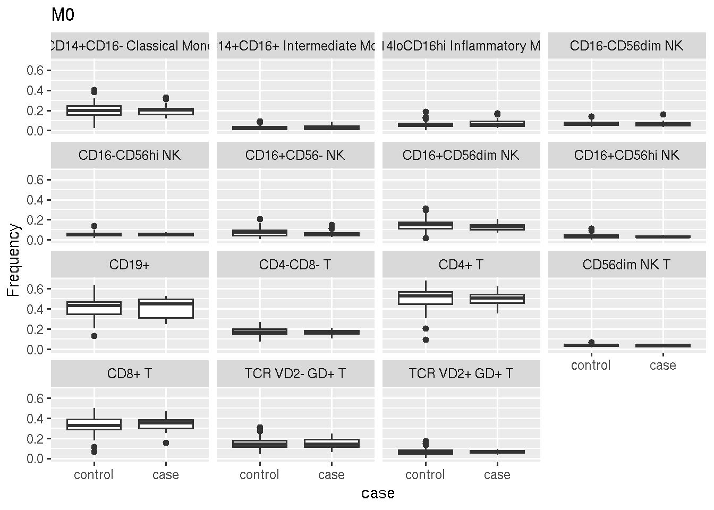
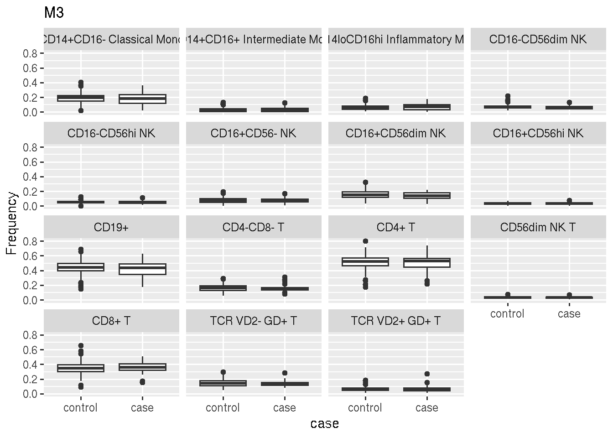
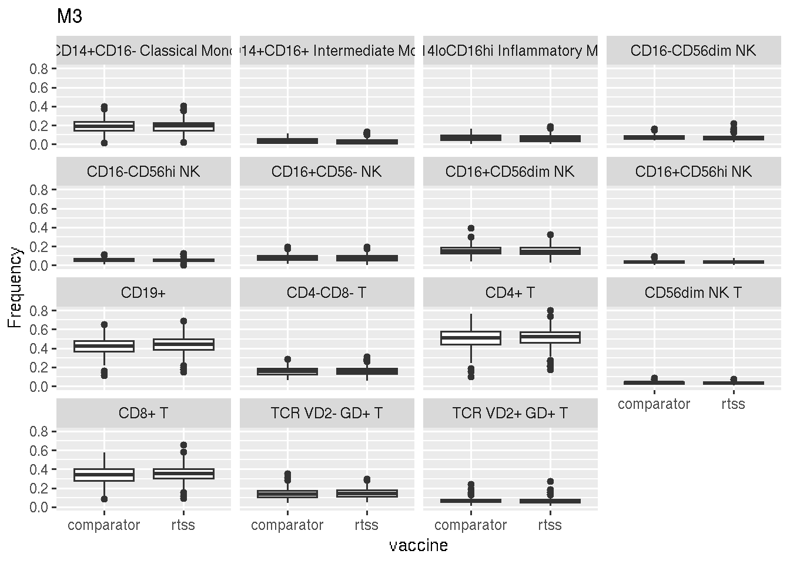

Last updated: 2019-03-20
workflowr checks: (Click a bullet for more information) ✔ R Markdown file: up-to-date
Great! Since the R Markdown file has been committed to the Git repository, you know the exact version of the code that produced these results.
✔ Environment: empty
Great job! The global environment was empty. Objects defined in the global environment can affect the analysis in your R Markdown file in unknown ways. For reproduciblity it’s best to always run the code in an empty environment.
✔ Seed:
set.seed(20181108)
The command set.seed(20181108) was run prior to running the code in the R Markdown file. Setting a seed ensures that any results that rely on randomness, e.g. subsampling or permutations, are reproducible.
✔ Session information: recorded
Great job! Recording the operating system, R version, and package versions is critical for reproducibility.
✔ Repository version: 55d014c
wflow_publish or wflow_git_commit). workflowr only checks the R Markdown file, but you know if there are other scripts or data files that it depends on. Below is the status of the Git repository when the results were generated:
Ignored files:
Ignored: .Rhistory
Untracked files:
Untracked: analysis/children/
Untracked: code/mal_utilities.R
Untracked: cor_table.RDS
Untracked: data/170830-RTSS case control phenotyping.txt
Untracked: data/BTM_for_GSEA_20131008.gmt
Untracked: data/CD4_CSP_PFS.rds
Untracked: data/CD4_HBS_PFS.rds
Untracked: data/CD8_CSP_PFS.rds
Untracked: data/CD8_HBS_PFS.rds
Untracked: data/PRIMARY_CD4_MAGNITUDE.rds
Untracked: data/faustOutputAllRtss_v02.csv
Untracked: data/ics_extra_vars_20180515.csv
Untracked: data/m067_seattle_data.RData
Untracked: data/phenoLineagePctLive.txt
Untracked: docs/figure/
Untracked: output/dmso_M0_both_disease.csv
Untracked: output/dmso_M0_old_disease.csv
Untracked: output/dmso_M3_both_disease.csv
Untracked: output/dmso_M3_old_disease.csv
Untracked: output/dmso_M3_young_disease.csv
| File | Version | Author | Date | Message |
|---|---|---|---|---|
| Rmd | 55d014c | carlmurie | 2019-03-20 | wflow_publish(files = “analysis/*.Rmd“) |
| total | control | case | neither | comparator | rtss | |
|---|---|---|---|---|---|---|
| M0 | 134 | 96 | 38 | 0 | 49 | 85 |
| M3 | 336 | 264 | 72 | 0 | 95 | 241 |
A clogit test of case-control vs frequency (on sqrt scale) with gender and match as a stratified variable was applied to the cell frequency.
Per cell population
| total | control | case | comparator | rtss | F | M | |
|---|---|---|---|---|---|---|---|
| M0 | 86 | 66 | 20 | 0 | 86 | 35 | 51 |
| M3 | 241 | 195 | 46 | 0 | 241 | 118 | 123 |
| Population | M0 | M3 | M0_fdr | M3_fdr |
|---|---|---|---|---|
| CD14+CD16- Classical Mono | 0.918 | 0.73 | 0.929 | 0.924 |
| CD14+CD16+ Intermediate Mono | 0.471 | 0.229 | 0.929 | 0.649 |
| CD14loCD16hi Inflammatory Mono | 0.248 | 0.0653 | 0.929 | 0.649 |
| CD16-CD56dim NK | 0.827 | 0.199 | 0.929 | 0.649 |
| CD16-CD56hi NK | 0.788 | 0.867 | 0.929 | 0.924 |
| CD16+CD56- NK | 0.65 | 0.906 | 0.929 | 0.924 |
| CD16+CD56dim NK | 0.291 | 0.263 | 0.929 | 0.649 |
| CD16+CD56hi NK | 0.7 | 0.691 | 0.929 | 0.924 |
| CD19+ | 0.858 | 0.704 | 0.929 | 0.924 |
| CD4-CD8- T | 0.531 | 0.181 | 0.929 | 0.649 |
| CD4+ T | 0.929 | 0.886 | 0.929 | 0.924 |
| CD56dim NK T | 0.596 | 0.52 | 0.929 | 0.924 |
| CD8+ T | 0.475 | 0.226 | 0.929 | 0.649 |
| TCR VD2- GD+ T | 0.777 | 0.303 | 0.929 | 0.649 |
| TCR VD2+ GD+ T | 0.744 | 0.924 | 0.929 | 0.924 |

A clogit test of vaccine vs frequency (on sqrt scale) with gender and match as a stratified variable was applied to the cell frequency.
This includes all case/control subjects and both rtss and comparator but only visit M3.
Per cell population
| total | control | case | neither | F | M | |
|---|---|---|---|---|---|---|
| comparator | 96 | 70 | 26 | 0 | 51 | 45 |
| rtss | 241 | 195 | 46 | 0 | 118 | 123 |
| Population | pValue | fdr |
|---|---|---|
| CD4+ T | 0.764 | 0.988 |
| CD4-CD8- T | 0.988 | 0.988 |
| CD8+ T | 0.881 | 0.988 |
| TCR VD2- GD+ T | 0.926 | 0.988 |
| TCR VD2+ GD+ T | 0.867 | 0.988 |
| CD19+ | 0.75 | 0.988 |
| CD16+CD56- NK | 0.828 | 0.988 |
| CD16+CD56dim NK | 0.89 | 0.988 |
| CD16-CD56dim NK | 0.967 | 0.988 |
| CD16+CD56hi NK | 0.918 | 0.988 |
| CD16-CD56hi NK | 0.987 | 0.988 |
| CD56dim NK T | 0.808 | 0.988 |
| CD14+CD16- Classical Mono | 0.908 | 0.988 |
| CD14loCD16hi Inflammatory Mono | 0.966 | 0.988 |
| CD14+CD16+ Intermediate Mono | 0.927 | 0.988 |

R version 3.5.0 (2018-04-23) Platform: x86_64-pc-linux-gnu (64-bit) Running under: Ubuntu 14.04.5 LTS
Matrix products: default BLAS/LAPACK: /app/easybuild/software/OpenBLAS/0.2.18-GCC-5.4.0-2.26-LAPACK-3.6.1/lib/libopenblas_prescottp-r0.2.18.so
locale: [1] LC_CTYPE=en_US.UTF-8 LC_NUMERIC=C
[3] LC_TIME=en_US.UTF-8 LC_COLLATE=en_US.UTF-8
[5] LC_MONETARY=en_US.UTF-8 LC_MESSAGES=en_US.UTF-8
[7] LC_PAPER=en_US.UTF-8 LC_NAME=C
[9] LC_ADDRESS=C LC_TELEPHONE=C
[11] LC_MEASUREMENT=en_US.UTF-8 LC_IDENTIFICATION=C
attached base packages: [1] stats4 parallel stats graphics grDevices utils datasets [8] methods base
other attached packages: [1] mal067data_1.0 lme4_1.1-17 Matrix_1.2-14
[4] survival_2.42-3 forcats_0.3.0 stringr_1.4.0
[7] purrr_0.2.5 readr_1.3.1 tidyr_0.8.0
[10] tibble_2.0.1 tidyverse_1.2.1 kableExtra_1.0.1
[13] gridExtra_2.3 ggplot2_3.1.0 DT_0.5
[16] GSEABase_1.42.0 graph_1.58.0 annotate_1.58.0
[19] XML_3.98-1.11 AnnotationDbi_1.42.1 IRanges_2.14.6
[22] S4Vectors_0.18.1 edgeR_3.22.1 limma_3.36.1
[25] Biobase_2.42.0 BiocGenerics_0.28.0 data.table_1.12.0
[28] RNASeqUtilities_1.1 dplyr_0.7.99.9000 knitr_1.21
loaded via a namespace (and not attached): [1] nlme_3.1-137 bitops_1.0-6 lubridate_1.7.4
[4] bit64_0.9-7 webshot_0.5.1 httr_1.4.0
[7] rprojroot_1.3-2 tools_3.5.0 backports_1.1.2
[10] R6_2.4.0 DBI_1.0.0 lazyeval_0.2.1
[13] colorspace_1.4-0 withr_2.1.2 tidyselect_0.2.5 [16] bit_1.1-14 compiler_3.5.0 git2r_0.24.0
[19] cli_1.0.1 rvest_0.3.2 xml2_1.2.0
[22] labeling_0.3 scales_1.0.0 digest_0.6.18
[25] minqa_1.2.4 rmarkdown_1.11 R.utils_2.7.0
[28] pkgconfig_2.0.2 htmltools_0.3.6 htmlwidgets_1.3
[31] rlang_0.3.1 readxl_1.1.0 rstudioapi_0.9.0 [34] RSQLite_2.1.1 generics_0.0.2 jsonlite_1.6
[37] R.oo_1.22.0 RCurl_1.95-4.10 magrittr_1.5
[40] Rcpp_1.0.0 munsell_0.5.0 R.methodsS3_1.7.1 [43] stringi_1.3.1 whisker_0.3-2 yaml_2.2.0
[46] MASS_7.3-50 plyr_1.8.4 grid_3.5.0
[49] blob_1.1.1 crayon_1.3.4 lattice_0.20-35
[52] haven_2.0.0 splines_3.5.0 hms_0.4.2
[55] locfit_1.5-9.1 pillar_1.3.1 glue_1.3.0
[58] evaluate_0.13 modelr_0.1.1 nloptr_1.0.4
[61] cellranger_1.1.0 gtable_0.2.0 assertthat_0.2.0 [64] xfun_0.5 xtable_1.8-3 broom_0.5.1
[67] viridisLite_0.3.0 memoise_1.1.0 workflowr_1.1.1
[70] here_0.1
This reproducible R Markdown analysis was created with workflowr 1.1.1